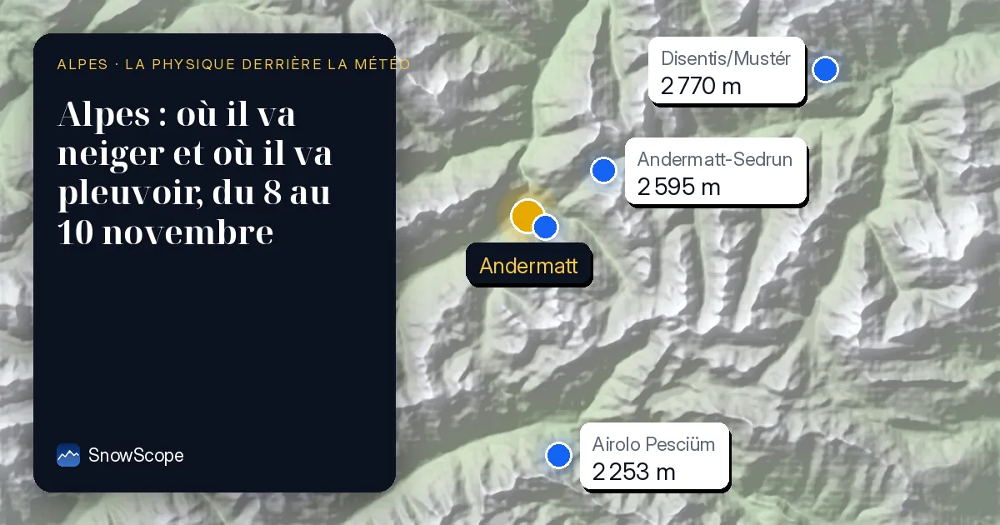

Alpes : où il va neiger et où il va pleuvoir, du 8 au 10 novembre
Un système météorologique doux apportera des précipitations abondantes aux Alpes de lundi à mercredi, mais le niveau de congélation reste trop haut pour les vallées et les pentes de ski inférieures. La limite de neige devrait rester entre 2 190 et 2 850 m, donc les skieurs en dessous de 2 500 m doivent s'attendre à de la pluie.
Consultez les prévisions neige en temps réel pour Andermatt sur l'application SnowScopeHauteurs de neige, alertes poudreuse et carte 3D, gratuitement.

Neige au-dessus de 3 000 m, pluie en dessous de 2 000 m
La carte des neiges de la région montre comment les précipitations varient selon l'altitude au cours de la période. À 3 000 m et au-delà, presque toutes les précipitations seront de la neige. À 2 500 m, un mélange se forme : environ un tiers de neige, un tiers de grésil mouillé et un tiers de pluie. À 2 000 m, presque neuf dixièmes tombent sous forme de pluie. Les vallées se situent bien en dessous de cette limite et ne verront que de la pluie.
La limite de neige médiane s'établit à 2 540 m sur toute la période de prévision. Cela signifie que les glaciers et les crêtes hautes accumuleront de la neige fraîche tandis que les pistes de ski dans la bande 2 000–2 250 m resteront boueuses ou humides.

Voir les chiffres
| Altitude (m) | Neige % | Neige mouillée / grésil % | Pluie % |
|---|---|---|---|
| 500 | 0 | 0 | 100 |
| 750 | 0 | 0 | 100 |
| 1 000 | 0 | 0 | 100 |
| 1 250 | 0 | 0 | 100 |
| 1 500 | 0 | 1 | 99 |
| 1 750 | 1 | 3 | 96 |
| 2 000 | 2 | 10 | 88 |
| 2 250 | 10 | 26 | 64 |
| 2 500 | 31 | 38 | 31 |
| 2 750 | 62 | 33 | 5 |
| 3 000 | 90 | 10 | 0 |
| 3 250 | 100 | 0 | 0 |
| 3 500 | 100 | 0 | 0 |
| 3 750 | 100 | 0 | 0 |
| 4 000 | 100 | 0 | 0 |
Comment la température établit la limite
La température de l'air baisse d'environ 6,5 °C par kilomètre d'altitude. Lorsque les précipitations traversent l'air chaud, elles fondent avant d'atteindre le sol. La limite de neige se situe à environ 300 m en dessous du niveau de congélation car la neige qui tombe met du temps à fondre complètement. Autour de cette limite, une bande de grésil mouillé ou de neige lourde et humide se forme sur environ 150 m de part et d'autre.
Dans ce cas, le niveau de congélation pendant les heures humides se situe près de 2 730 m à Andermatt. La limite de neige se situe donc près de 2 430 m. Plus au sud, dans la vallée du Lugano, le niveau de congélation monte encore plus haut, à 2 760 m, poussant la limite de neige jusqu'à 2 460 m.
Voir les chiffres
| Date | Andermatt (mm) | Altdorf (mm) | Lugano (mm) | Innsbruck (mm) |
|---|---|---|---|---|
| 8 novembre * | 0.0 | 0.0 | 0.3 | 0.0 |
| 9 novembre * | 6.2 | 11.3 | 0.3 | 2.4 |
| 10 novembre * | 8.5 | 16.6 | 3.6 | 6.9 |
| 11 novembre * | 2.3 | 0.3 | 1.5 | 0.0 |
| 12 novembre * | 10.0 | 7.8 | 17.9 | 7.1 |
Quand arrivent les précipitations
La plupart de la pluie et de la neige tombent les 9 et 10 novembre. À Andermatt, le pic du flux d'humidité se produit vers midi le 10 novembre. Altdorf, dans les vallées du nord, reçoit 36 mm au total (surtout les 9 et 10 novembre), tandis que Innsbruck à l'est en reçoit 16 mm. Andermatt elle-même en reçoit 27 mm, tous tombant au-dessus de l'altitude de base de 1 444 m.
Le vent durant cette période souffle principalement du sud-ouest à des vitesses proches de 38–64 km/h, selon la localité. Cela pousse l'humidité vers le haut sur les faces sud et ouest des crêtes.


Ce que cela signifie pour chaque vallée
Altdorf et les autres vallées du nord se situent entre 450 et 580 m d'altitude. Le niveau de congélation là-bas reste bien au-dessus de 2 100 m même à son plus bas, donc toutes les précipitations tombent sous forme de pluie. Lugano au sud, à 300 m, est encore plus chaud et ne voit que de la pluie. Aucune de ces deux localités n'ajoutera de neige.
Andermatt, perchée à 2 963 m, est assez haute pour que la neige soit probable sur ses pentes et crêtes supérieures. Les glaciers supérieurs seront bien dans la zone enneigée. Le terrain de mi-montagne entre 2 000 et 2 500 m sera la zone désordonnée où se mélangent neige mouillée, grésil et pluie.
Risques de début de saison
La neige mouillée qui tombe sur un mince manteau de neige existant peut glisser de manière inattendue. Si vous skiez au-dessus de 2 500 m où de la neige est prévue, vérifiez l'activité récente d'avalanche et consultez le bulletin officiel avant de faire du ski hors-piste. La neige lourde et mouillée est plus lourde que la neige sèche et adhère à elle-même ; sur une pente à faible épaisseur, elle peut tenir mais peut se décrocher soudainement quand les conditions changent.
Les stations situées plus bas avec uniquement de la pluie perdront toute couverture précoce qu'elles auraient construite. La prochaine chance d'accumulation de neige sur toute la région arrivera quand la masse d'air derrière ce système refroidira—probablement dans les jours après le 10 novembre si un front froid s'impose.
Ce que cela change pour vous
- Consultez à nouveau la carte des neiges en direct avant votre départ ; cette prévision date du 7 novembre et les régimes météorologiques peuvent changer.
- Au-dessus de 2 500 m, restez attentif à l'instabilité de neige mouillée : consultez le bulletin officiel d'avalanche avant tout ski hors-piste.
- Les stations en dessous de 2 000 m verront surtout de la pluie. Si vous avez une couverture de neige mince, attendez-vous à une fonte et prévoyez de revenir dans les semaines plus froides.
- Le vent du sud-ouest chargera fortement les pentes sous le vent de neige mouillée ; les pentes exposées au nord pourraient s'en tirer mieux.
- Apportez des couches : l'air est doux (jusqu'à 18 °C dans la vallée d'Altdorf), donc vous vous réchaufferez en descendant.
À propos de ces chiffres
Les hauteurs de neige des stations sont la neige la plus épaisse sur le haut du domaine à la date indiquée ; ce sont des estimations pour une zone, pas une mesure en un point. Les prévisions peuvent changer. Consultez toujours le bulletin d'avalanche officiel avant le hors-piste.
Citer ce bulletin
Pour la recherche, l'enseignement ou la presse : chiffres et graphiques réutilisables librement sous CC BY 4.0 avec cette citation.
SnowScope (2026), Alpes : où il va neiger et où il va pleuvoir, du 8 au 10 novembre, https://snowscope.app/blog/fr/2026/11/alps-where-it-snows-where-it-rains-8-10-november-2026.html, consulté le 2026-11-08
SnowScope (Atlas Labs). (2026, November 8). Alpes : où il va neiger et où il va pleuvoir, du 8 au 10 novembre. SnowScope snow reports. https://snowscope.app/blog/fr/2026/11/alps-where-it-snows-where-it-rains-8-10-november-2026.html
BibTeX
@misc{snowscope2026alpswhereitsnowswhereitr,
author = {{SnowScope (Atlas Labs)}},
title = {Alpes : où il va neiger et où il va pleuvoir, du 8 au 10 novembre},
year = {2026},
month = nov,
howpublished = {\url{https://snowscope.app/blog/fr/2026/11/alps-where-it-snows-where-it-rains-8-10-november-2026.html}},
note = {Published 2026-11-08 10:53 UTC; accessed 2026-11-08}
}· CC BY 4.0 · Méthodes, données et outils →
Suivre Andermatt
Gratuit : un message quand la neige arrive, et la météo chaque matin.
Autres bulletins neige

Quand réserver Courchevel et les 3 Vallées, quel village choisir et où la neige tient, d'après 46 hivers passés.
Cortina d'Ampezzo de trois façons : Tofana, Faloria-Cristallo et Cinque Torri-Lagazuoi, avec 46 hivers de données de neige à trois altitudes.

Bonneval-sur-Arc se situe à 1 794 m dans la haute vallée de l'Arc, fermée par l'Iseran en hiver. L'épaisseur de neige varie de 99 cm en bas à 335 cm au sommet. Données de 46 hivers passés, novembre 2026.